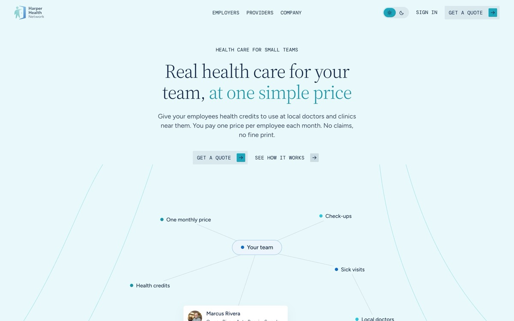
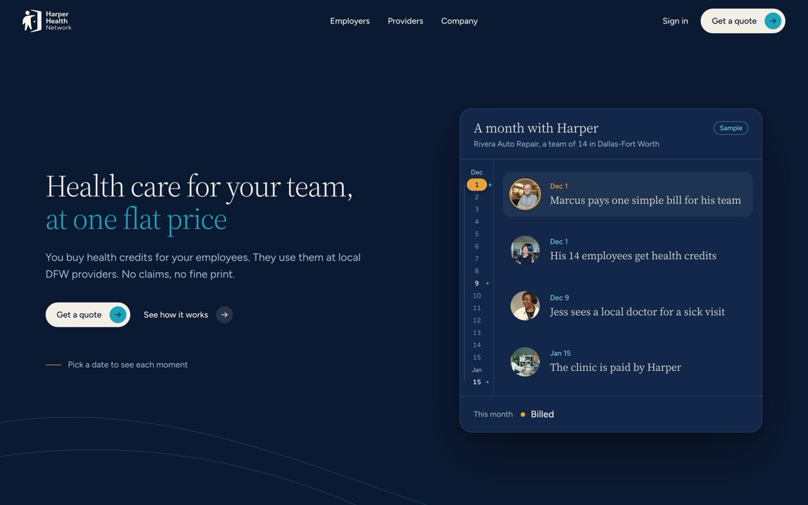
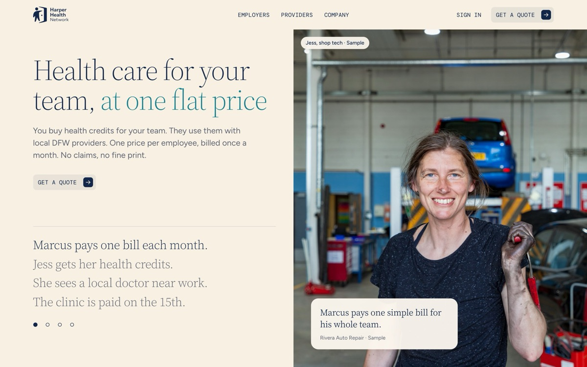
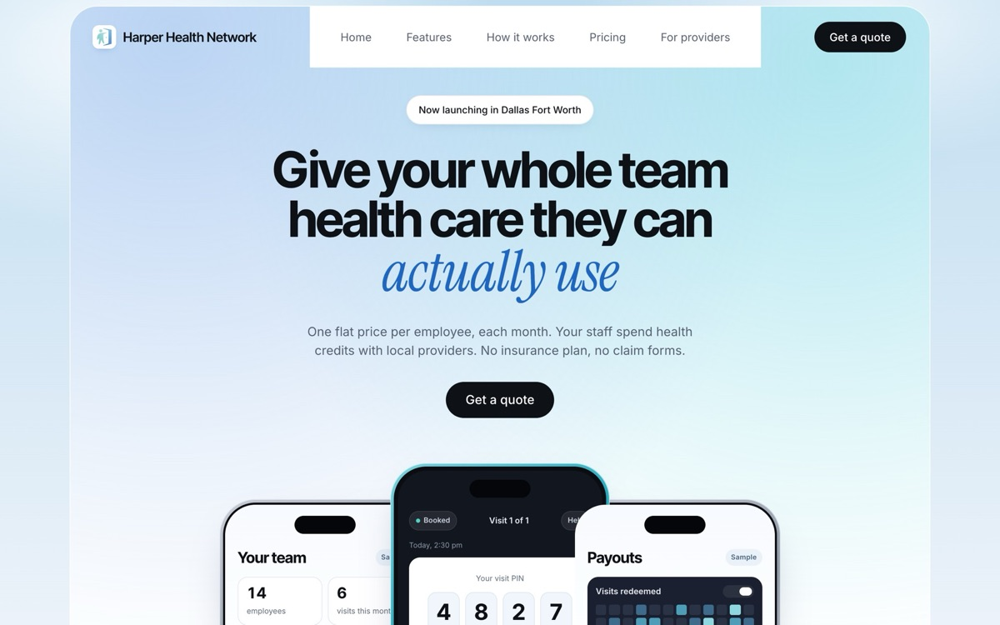
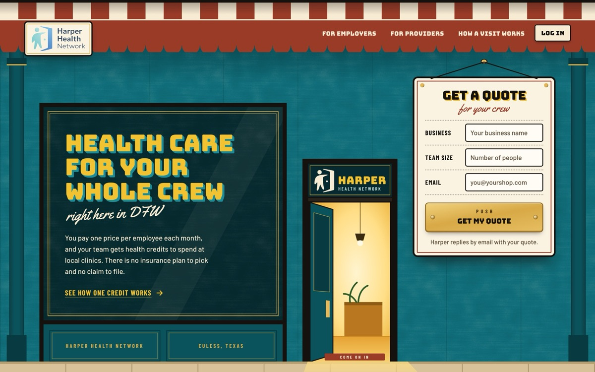
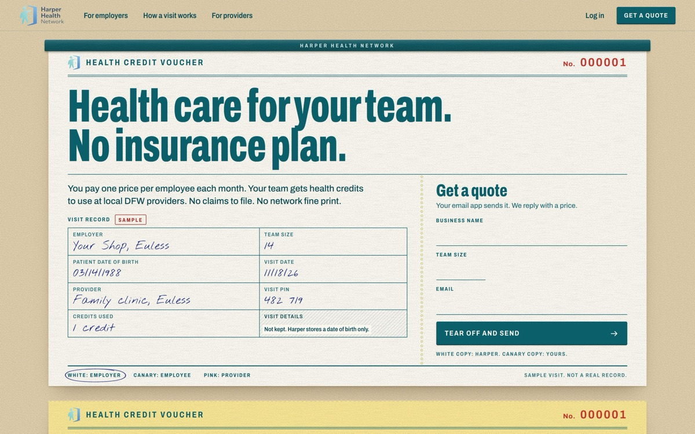

Round 2
Calm and clinical, modeled on clinia.com.

In Harper's colorsOption 1: Network
One price in, care out, shown as a map of your team, credits and local doctors. Light and dark mode.
Open
Option 2: Ledger
Harper navy and teal. One month of health credits, told on a calendar.
Open
Option 3: Front Desk
One visit, told by the people in it. Quiet and photo-led.
OpenRound 1
Bold and full of motion, modeled on reelmotion.fit.

Option 1: Three phones
The owner, the employee and the clinic, each on their own phone screen.
Open
Option 2: Main Street
A sign-painted DFW storefront. The page walks down the street, one door at a time.
Open
Option 3: Triplicate
One visit, three copies: one each for the owner, the employee and the clinic.
Open